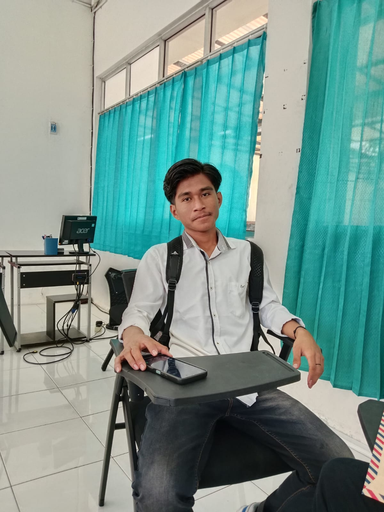

Tentang Puskesmas
Puskesmas adalah pusat kesehatan masyarakat yang berperan dalam memberikan pelayanan kesehatan dasar kepada masyarakat.

Visi
Mewujudkan masyarakat yang sehat dan sejahtera melalui pelayanan kesehatan yang berkualitas Menjadi Pusat Pelayanan Kesehatan Terdepan yang Memberikan Layanan Berkualitas, Berbasis Preventif, dan Berorientasi pada Kesejahteraan Masyarakat.
Misi
- Memberikan pelayanan kesehatan yang profesional dan berkualitas.
- Meningkatkan kesadaran masyarakat akan pentingnya kesehatan.
- Mendukung program pemerintah dalam bidang kesehatan.
- Mengutamakan Pencegahan dan Edukasi
- Mendukung Inovasi dan Teknologi
Kaciwww

"Kesederhanaan adalah kecanggihan tertinggi"
Topik

"Ubahlah dunia dengan menjadi diri sendiri"
Mutia

"Kebahagiaan bergantung kepada diri kita sendiri"
Pacriii

"Apa yang kamu lakukan, lakukanlah dengan baik"
Anis

"Tentukan prioritasmu dan fokus pada mereka"